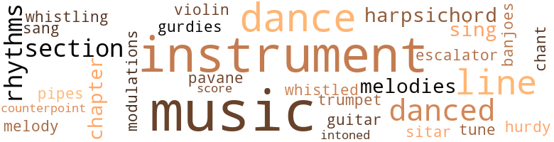
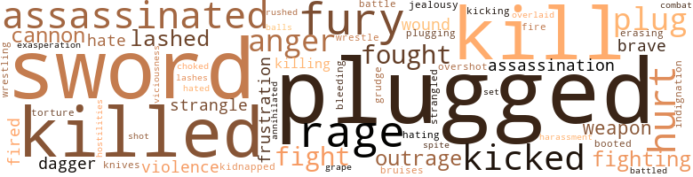
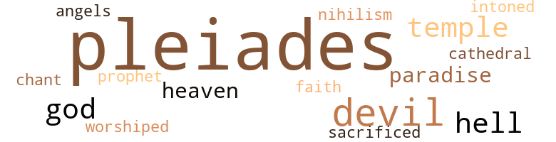

Nova, by Delany, Samuel R. (1968)
89 music-related terms matched in this text.
Most frequent terms in this topic: music (17); instrument (10); dance (9); danced (5); instruments (5)
banjo.n.01
Definition: a stringed instrument of the guitar family that has long neck and circular body
| word | sentence |
|---|---|
| banjoes | " The Darktown Strutters ' Ball ' . . . " They moved on through the clutter of theramins , encore banjoes , and hurdy-gurdies . |
barrel_organ.n.01
Definition: a musical instrument that makes music by rotation of a cylinder studded with pegs
| word | sentence |
|---|---|
| hurdy-gurdies | " The Darktown Strutters ' Ball ' . . . " They moved on through the clutter of theramins , encore banjoes , and hurdy-gurdies . |
chapter.n.01
Definition: a subdivision of a written work; usually numbered and titled
| word | sentence |
|---|---|
| chapter | He only finished the first chapter . |
| chapter | He had not begun the first chapter . |
cornet.n.01
Definition: a brass musical instrument with a brilliant tone; has a narrow tube and a flared bell and is played by means of valves
| word | sentence |
|---|---|
| trumpet | It yowled like a trumpet , twisted its face to resemble Dan 's own , but with a third eye spinning . |
counterpoint.n.01
Definition: a musical form involving the simultaneous sound of two or more melodies
| word | sentence |
|---|---|
| counterpoint | Idas played a counterpoint of sounds and images on the Mouse 's syrynx . |
dance.n.01
Definition: an artistic form of nonverbal communication
| word | sentence |
|---|---|
| dance | " Come on , sweetheart , let 's dance ! " |
| dance | Back in the darkness , Dan , his back sweating from the dance , nuzzled the girl with sequined shoulders . |
| dance | " Play something that we can dance - " " - dance with us , Tyӱ . |
| dance | " Though all these dance around me now , I make my art for a mythological audience of one . |
dance.v.03
Definition: skip, leap, or move up and down or sideways
| word | sentence |
|---|---|
| danced | Long toes struck a chair leg : the chair danced on the flags . |
| dance | Of course I 'll dance with you , honey . |
| dance | Responding with the nostalgia produced by ten-year-old popular music , the guests , in their bloated mache and plastic heads , broke off in twos , threes , fives , and sevens to dance . |
| dance | Yet I have enough prospective to know that in another thousand years these differences will seem as minute as the controversy of two medieval theologians disputing whether twelve or twenty-four angels can dance on the head of a pin . |
| danced | Bitten nails , enlarged knuckles ; the hacks of Katin 's hands flickered with autumn colors ; across the cement floor his shadow danced in the web . |
| danced | And the shadow danced on till voices : " Hey , are you guys still - " " - in here ? |
| danced | At the ground the steam ballooned and sagged ; before the light it danced and quivered . |
| dance | Sebastian - " " - Sebastian will you dance with us too ? " |
| dance | I dance in the fire . |
| danced | Nutrient fluids splashed Lorq as he danced back , on flooded sandals . |
escalator_clause.n.01
Definition: a clause in a contract that provides for an increase or a decrease in wages or prices or benefits etc. depending on certain conditions (as a change in the cost of living index)
| word | sentence |
|---|---|
| escalator | Halfway down , the Mouse began to walk backwards up the escalator . |
guitar.n.01
Definition: a stringed instrument usually having six strings; played by strumming or plucking
| word | sentence |
|---|---|
| guitar | With inductance surfaces like a theramin , with frets like a guitar , down one side were short drones as on a sitar , On the other were the extended bass drones of a guitarina . |
harpsichord.n.01
Definition: a clavier with strings that are plucked by plectra mounted on pivots
| word | sentence |
|---|---|
| harpsichord | On a platform at a harpsichord a man was playing a Byrd pavane . |
| harpsichords | The lights flickered over the machines , copper and ruby , to arpeggios recalling harpsichords ; Lorq looked at the boy by his knee . |
music.n.01
Definition: an artistic form of auditory communication incorporating instrumental or vocal tones in a structured and continuous manner
| word | sentence |
|---|---|
| music | Now , after a year of phenomenal popular success , the intelligentsia had accepted the Tohu-bohus as legitimate music ; the jarring rhythms tumbled across the lawn . |
| music | Terrified , he fled from the music stalls beneath white vaults , down between the stinking booths of suede . |
| music | There was music behind her voice ; there was a babble of other voices . |
| music | And in the background : " Oh , Cecil , I ca n't do that step - " " Turn the music up louder - " " But I do n't like anchovies - " " Prince , " cried Che , " do hurry ! |
| music | Yes , Hillary , you may change the music . |
| music | Are you going to have any nineteenth-century Turkish music at your party ? |
| music | And the crowd surged in behind her : " Does n't anybody want any of this ' forty-eight - " " I ca n't get any music in here . |
| music | Why is n't there any music - " " Cecil , do you have any more of that gold powder ? " |
| music | At the close of the thirty-first century , its central avenue hung with lights , the side alleys filled with music , menageries , drink , and gaming booths , while fireworks boomed in the night , the Ile St.-Louis held Prince Red 's party . |
| Music | Music invaded his hollow mask where his head was cushioned on the sound of his own breath . |
| music | Responding with the nostalgia produced by ten-year-old popular music , the guests , in their bloated mache and plastic heads , broke off in twos , threes , fives , and sevens to dance . |
| music | " He 's got that old Turkish music ! " |
| Music | Music from a dozen epochs clashed across the island . |
| music | The Mouse heard music . |
| music | But the music was ornamented with sharp , insistent quarter tones . |
| music | The music began again . |
| music | There was the tinkling of amplified music . |
| Music | Music smashed over the metal chimes while red lights lied one another around the bar . |
| music | " Take a - " The Mouse 's hips jerked against the music . |
| music | Color , smell , and music ceased . |
musical_instrument.n.01
Definition: any of various devices or contrivances that can be used to produce musical tones or sounds
| word | sentence |
|---|---|
| instruments | Turning down a side street , Lorq moved into a crowd that pushed him forward , till at lust he confronted the towering bank of electronic instruments that were reproducing the jarring , textured silences of the Tohu-bohus . |
| instruments | Maybe it was a twist in space itself , or a failure of instruments , but we overshot the station and went right on into the sun , during the first hour of implosion . " |
| instruments | But the instruments recorded our path . |
| instrument | The Mouse lifted his instrument from its sack . |
| instrument | He lifted the instrument from the Mouse 's lap . |
| instrument | He shook the sack and slipped the instrument inside . |
| instrument | He grinned and started to put the instrument back into the bag . |
| instrument | His vest was half laced , and he braced the instrument against the small , defined muscles of his chest . |
| instruments | Yes , they 're a collection of twentieth-century musical instruments . |
| instruments | New light : Rising from the floor was a bank of instruments . |
| instrument | Lorq 's , ridged and knot-knuckled , lay on the instrument bank ; two fingers held a toggle . |
| instrument | With lips pulled thin , the Mouse looked from the twins to his instrument . |
| instrument | Lorq ducked with the instrument against his chest . |
| instrument | The Mouse put the instrument back in his sack , crossed his arms on the top , and leaned his chin on the back of his hands . |
| instrument | " Not the instrument . " |
pavane.n.01
Definition: music composed for dancing the pavane
| word | sentence |
|---|---|
| pavane | On a platform at a harpsichord a man was playing a Byrd pavane . |
pipe.n.04
Definition: a tubular wind instrument
| word | sentence |
|---|---|
| pipes | He clutched the sack to his belly , jumped over a carton of meerschaum pipes that had broken open , spilling across the dusty stone , passed under another arch , and for twenty meters darted through the crowds roaming the Golden Alley where velvet display windows were alive with light and gold . |
rhythm.n.04
Definition: the arrangement of spoken words alternating stressed and unstressed elements
| word | sentence |
|---|---|
| rhythms | His hands had taken up the rhythms of the tides , the weight of ore became a comfort on his palms - " " - so we left our brother in the Illyrion mines , and came up among the stars , afraid - " " - you see , we are afraid that as our brother , Tobias , found something that pulled him from us , so one of us may find something that will divide the remaining two - " " - as we thought the three of us could never be divided . " |
| rhythms | Now , after a year of phenomenal popular success , the intelligentsia had accepted the Tohu-bohus as legitimate music ; the jarring rhythms tumbled across the lawn . |
| rhythms | Multiple melodies flailed a dozen dancing Tyӱs to different rhythms . |
score.n.02
Definition: a written form of a musical composition; parts for different instruments appear on separate staves on large pages
| word | sentence |
|---|---|
| score | " That almost settles tire score , Ruby ? " |
section.n.01
Definition: a self-contained part of a larger composition (written or musical)
| word | sentence |
|---|---|
| section | Crawling the nets as though they were an easy ladder , they loosed one section of links . |
| section | One nearly dropped his section ; the injured rider swung against the blue flank . |
| section | Even under : a section of the floor was transparent and they could see lights coming on in rooms stories down . |
sing.v.02
Definition: produce tones with the voice
| word | sentence |
|---|---|
| sang | And finally the shock waves : the walls sang ! |
| sing | I have n't got the voice to sing or shout it . |
| sing | " Sounds like a trip I 'll be able to sing about . " |
sitar.n.01
Definition: a stringed instrument of India; has a long neck and movable frets; has 6 or 7 metal strings for playing and usually 13 resonating strings
| word | sentence |
|---|---|
| sitar | With inductance surfaces like a theramin , with frets like a guitar , down one side were short drones as on a sitar , On the other were the extended bass drones of a guitarina . |
tone.v.01
Definition: utter monotonously and repetitively and rhythmically
| word | sentence |
|---|---|
| chant | On the stage at the end of the bar a naked girl stepped into the coral spotlight and began to chant a poem . |
| intoned | " Oh , for the rebirth of an educational system where understanding was an essential part of knowledge , " Katin intoned to the flickering dark . |
transition.n.04
Definition: a musical passage moving from one key to another
| word | sentence |
|---|---|
| modulations | As he moved even further , into his ear threaded the thirdless modulations that he had heard over the speaker of the Caliban , hovering above the Himalayas . |
tune.n.01
Definition: a succession of notes forming a distinctive sequence
| word | sentence |
|---|---|
| lines | The stones , basically silicon , had been formed at geological pressures so that in each crystal , about the size of a child 's fist , light flowed along the shattered blue lines within the jagged forms . |
| lines | There are two beauties ( her face struck the thought in him , articulate and complete ) : with the first , the features and the body 's lines conform to an averaged standard that will offend no one : this was the beauty of models and popular actresses ; this was the beauty of Che-ong . |
| lines | " From the crack across mine , you where those lines my fate can tell will touch ? " |
| line | For a couple of years he plugged into a small commercial line that ran the Shifting Triangle run : Earth to Mars , Mars to Ganymede , Ganymede to Earth . |
| lines | A few days after his eighteenth birthday ( at least it was the day the girl and he had agreed would be his birthday back in Melbourne ) , the Mouse hitched out to the second moon of Neptune , from which the big commercial lines left for worlds all over Draco , for the Pleiades Federation , and even the Outer Colonies . |
| melody | Through the imitations of mist , gold webs glittered and doffed to a hexatonic melody . |
| melodies | Falling melodies meshed . |
| tune | Then it got like a tune caught in my head , playing through again and again . |
| melodies | Multiple melodies flailed a dozen dancing Tyӱs to different rhythms . |
| line | Now a man went to a factory , plugged himself in , and he could push the raw materials into the factory with his left foot , shape thousands on thousands of precise parts with one hand , assemble them with the other , and shove out a line of finished products with his right foot , having inspected them all with his own eyes . |
| Lines | Lines scored Lorq 's face . |
violin.n.01
Definition: bowed stringed instrument that is the highest member of the violin family; this instrument has four strings and a hollow body and an unfretted fingerboard and is played with a bow
| word | sentence |
|---|---|
| violin | People would put a coin in the slot and it would automatically play a violin that 's on the stand in there with a player-piano accompaniment , programmed on a perforated paper roll . " |
whistle.v.01
Definition: make whistling sounds
| word | sentence |
|---|---|
| whistling | Breath caught in Dan 's throat , then came out whistling . |
| whistled | Kalin whistled . |
170 violence-related terms matched in this text.
Most frequent terms in this topic: plugged (18); Swords (11); kill (11); killed (10); fury (6)
aggravation.n.01
Definition: an exasperated feeling of annoyance
| word | sentence |
|---|---|
| exasperation | " Lorq " - and exasperation grew in her voice - " what are you doing ? |
anger.n.01
Definition: a strong emotion; a feeling that is oriented toward some real or supposed grievance
| word | sentence |
|---|---|
| anger | His voice rasped to silence on his anger , then broke : " Get away ! " |
| Anger | Anger snapped in his chest , his eyes , his hands . |
| anger | He laughed ; the Mouse , who had not judged the gathering expression right , had expected anger . |
| anger | In anger she struck the response plate . |
assassinate.v.01
Definition: murder; especially of socially prominent persons
| word | sentence |
|---|---|
| assassinated | It was the year that Secretary Morgan of the Pleiades Federation had been assassinated . |
| assassinated | I was only three , but - " " Morgan assassinated Underwood ! " the Mouse exclaimed . |
| assassinated | " Underwood , " Katin said , " assassinated Morgan . |
| assassinated | Morgan assassinated Underwood and it became part of both our experiences - " he stopped ; because Lorq had frowned . |
| assassinated | " You mean Underwood assassinated Morgan . " |
battle.v.01
Definition: battle or contend against in or as if in a battle
| word | sentence |
|---|---|
| battle | To battle it , he whirled and caught Lorq 's knee . |
| battled | Two battled above Sebastian 's shoulder for perch . |
bleeding.n.01
Definition: the flow of blood from a ruptured blood vessel
| word | sentence |
|---|---|
| bleeding | I ca n't feel anything in the leg , and something 's bleeding inside - " He spat red again . |
boot.v.01
Definition: kick; give a boot to
| word | sentence |
|---|---|
| booted | His booted foot kicked among Sebastian 's creatures . |
bruise.n.01
Definition: an injury that doesn't break the skin but results in some discoloration
| word | sentence |
|---|---|
| bruises | As the crew stepped onto the moving roadway , an oblate sun rouged away nights bruises . |
cannon.n.04
Definition: heavy automatic gun fired from an airplane
| word | sentence |
|---|---|
| cannons | He also had gotten hold of a couple of atomic cannons . |
| cannon | " He forced them to buy at cannon point ? " |
| cannon | The Black Cockatoo received the shuttle boat like a cannon shot in reverse . |
character_assassination.n.01
Definition: an attack intended to ruin someone's reputation
| word | sentence |
|---|---|
| assassination | For the first dozen years or so after the assassination , she was the focus for that terribly sophisticated part of society always back and forth between Draco and the Pleiades ; being seen at the Flame Beach on Chobe 's World , or putting in an appearance with her two little daughters at some space regatta . |
| assassination | Maybe I could do my novel on the Morgan assassination , a sort of modem historical . " |
dagger.n.01
Definition: a short knife with a pointed blade used for piercing or stabbing
| word | sentence |
|---|---|
| dagger | " I have a special one for you tool " Laughing , he lifted down a pirate 's head , with eyepatch , bandana , scarred cheek , and a dagger in bared teeth . |
| dagger | The hand came back ; the dagger and the carved wooden stick clattered to the floor from the other side . |
eliminate.v.03
Definition: kill in large numbers
| word | sentence |
|---|---|
| annihilated | Someone had once proposed the doubtful theory that all three of the remaining worlds were really moons that had been in the shadow of a gigantic planet when the catastrophe occurred , and thus escaped the fury that had annihilated their protector . |
erase.v.01
Definition: remove from memory or existence
| word | sentence |
|---|---|
| erasing | There 's an automatic erasing field that will completely clear the machine should it go on . " |
ferociousness.n.01
Definition: the trait of extreme cruelty
| word | sentence |
|---|---|
| viciousness | You were the first person to show me that viciousness naked in his face . |
fight.n.02
Definition: the act of fighting; any contest or struggle
| word | sentence |
|---|---|
| combat | We 're trying to maneuver a single combat here to decide which worlds fall where . " |
fight.n.05
Definition: a boxing or wrestling match
| word | sentence |
|---|---|
| fight | " Two boys with hands locked for a fight . |
| fight | His brown hair was silky , unkempt , and long enough to grab in a fight ( if you were that tall ) . |
fight.v.02
Definition: fight against or resist strongly
| word | sentence |
|---|---|
| fighting | Hey , watch out - " " They 're fighting ! |
| fought | He came with blasted pride , fury compelled by bewilderment , with dense humiliation breaking his breath against his ribs as he fought below the fantastic spectators . |
| fighting | " Here 's another argument you can use , Prince : you 're fighting not only for Draco , but for the economic stability of the Outer Colonies as well . |
| fight | The reason I must fight you is I think I can win . |
| fight | The hollow worlds cast up their hollow children , raised only to play or fight . |
| fought | He fought away from that . |
| fought | He fought for unconsciousness in terror of the torrent . |
| fought | He fought down panic , forced his face to relax . |
| fighting | But I 'd be fighting a dozen jinxes from the start , Mouse . |
frustration.n.03
Definition: a feeling of annoyance at being hindered or criticized
| word | sentence |
|---|---|
| Frustration | Frustration cracked her voice . |
| frustration | then turned away in frustration . |
fury.n.01
Definition: a feeling of intense anger
| word | sentence |
|---|---|
| fury | Prince grasped both rails , panting with fury . |
| Fury | Fury and pain hooked his face up in outrage . |
| fury | He came with blasted pride , fury compelled by bewilderment , with dense humiliation breaking his breath against his ribs as he fought below the fantastic spectators . |
| fury | He laughed again ; the sound caught in his chest , where anguish , despair , and fury fused . |
| rage | Puzzlement looked like rage . |
| fury | Someone had once proposed the doubtful theory that all three of the remaining worlds were really moons that had been in the shadow of a gigantic planet when the catastrophe occurred , and thus escaped the fury that had annihilated their protector . |
| Rage | Rage , Katin pondered . |
| Rage | Rage . |
| rage | But how is anyone supposed to distinguish between laughter and rage in that face . |
| fury | Light from Gold , from the fixtures about the room , from the Mouse 's syrynx , lashed the captain 's face to fury . |
| rage | That part of his mind still aloof from the rage thought : his middle ear must have ruptured . |
| rage | . . . Then the rage climbed higher in his brain . |
| rage | His rage was real and red and brighter than Gold . |
| fury | The moment his grip relaxed , she was away , eyes wide ; then her lids veiled the blue light till fury widened them again . |
gag.v.06
Definition: cause to retch or choke
| word | sentence |
|---|---|
| choked | Then her scream choked . |
grapeshot.n.01
Definition: a cluster of small projectiles fired together from a cannon to produce a hail of shot
| word | sentence |
|---|---|
| grape | I was leaning on the frame of the grape arbor with shiny grape leaves on my cheek and the lights of the city going out under the dawn , and the dancing had stopped , and two of the girls were making out in a red blanket back under the iron table . |
grudge.n.01
Definition: a resentment strong enough to justify retaliation
| word | sentence |
|---|---|
| grudge | " Prince is just crazy then , breaking out an old grudge that you and Aaron settled before we were born . " |
harassment.n.01
Definition: a feeling of intense annoyance caused by being tormented
| word | sentence |
|---|---|
| harassment | The Mouse , who did n't particularly like anyone in this port , looked up at the incredibly tall young man who had stopped his harassment of Dan . |
hate.n.01
Definition: the emotion of intense dislike; a feeling of dislike so strong that it demands action
| word | sentence |
|---|---|
| Hate | " Hate is a habit . |
hate.v.01
Definition: dislike intensely; feel antipathy or aversion towards
| word | sentence |
|---|---|
| hating | The Mouse smiled , hating it . |
| hate | " To bear such a scar , " Prince ( Lorq felt his jaw stiffen ; muscles bunched at temple and forehead ) said slowly , " you may have to be greater than I. " " To bear it I have to hate you . " |
| hated | We have hated each other a long time , Lorq . |
hostility.n.01
Definition: a hostile (very unfriendly) disposition
| word | sentence |
|---|---|
| hostilities | The forces that have pried up the old hostilities were moving about us when we were children . |
hurt.v.04
Definition: cause damage or affect negatively
| word | sentence |
|---|---|
| hurt | She did n't mean to hurt your feelings . " |
| hurt | Rock and metal hurt his arms and knees . |
indignation.n.01
Definition: a feeling of righteous anger
| word | sentence |
|---|---|
| Indignation | Indignation throbbed , confusion welled . |
| outrage | Fury and pain hooked his face up in outrage . |
| outrage | Hoarse outrage instead . |
| outrage | Now were a desperate bunch of dock-rats , with a Mouse among us ; and the only thing that propels us is my outrage . |
injury.n.01
Definition: any physical damage to the body caused by violence or accident or fracture etc.
| word | sentence |
|---|---|
| hurt | You 'll take my mind off the hurt . |
jealousy.n.01
Definition: a feeling of jealous envy (especially of a rival)
| word | sentence |
|---|---|
| jealousy | Her face compelled in the way that makes the merely beautiful sick with jealousy . |
kick_back.v.02
Definition: spring back, as from a forceful thrust
| word | sentence |
|---|---|
| kicked | His booted foot kicked among Sebastian 's creatures . |
| kicking | While you 're at it , you might apologize for kicking up that fuss . " |
| kicked | The man kicked the net loose from his left boot . |
| kicked | But . . . I " Leo dropped the net from his other wrist , kicked the plug loose from his other ankle , then scooped up a handful of links . |
| kicked | But Ruby kicked back ; he was yanked down four more . |
| kicked | He kicked the shards of hot glass across the rug . |
kidnap.v.01
Definition: take away to an undisclosed location against their will and usually in order to extract a ransom
| word | sentence |
|---|---|
| kidnapped | We thought you 'd been kidnapped . |
kill.v.10
Definition: cause the death of, without intention
| word | sentence |
|---|---|
| killed | After a moment he asked , " Say , Mouse , what did you mean about that old man and all his senses having been killed ? " |
| killed | They were n't killed . |
| kill | But his mother had put an end to the relation when , last year , he came back from the village and told how he had watched Tavo kill a man who had insulted the miner 's ability to drink . |
| kill | During that time , Red-shift is going to try to kill us . " |
| kill | The only way we can survive is to kill them first ; and the only way we can do that is to figure out a way to get lllyrion down to half price before it goes down to three quarters , and make those ships . " |
| killed | " About a month later my uncle was killed . " |
| killed | Once , I remember , they got two gypsies , and killed them . |
| killed | When Tyӱ gave her Tarot reading , the captain mentioned an uncle who was killed when he was a child . " |
| killed | But a billion-odd people were subjected to all the emotions of a man , about to be sworn in for Iris second term as Secretary of the Pleiades , suddenly attacked by a madman and killed . |
| killed | I want to attempt a measured , studied work of art , treating the subject as one that traumatized an entire generation 's faith in the ordered and rational world of man 's - " " Who killed who again ? " |
| killed | Most of the tactile nerve endings were killed too . |
| kill | Now , I tell you that if I have to kill you to stop you , I will . |
| kill | I came here - " " To kill me ? " |
| kill | That should kill as much work for as many people in Draco as the destruction my companies would mean in the Pleiades , Does that begin your argument well ? " |
| kill | Or you 'll have to kill me . " |
| kill | " I 'm going to kill you now . " |
| killing | He 's killing us , Ruby ! |
| kill | That 's all he wants to do , kill us ! " |
| killing | " I 'm killing you ! " |
| kill | " Just to kill you , Prince . " |
| kill | Stop himl Do n't let him kill usl " " You 're in liquid , Prince , so you 'll see them afire before you go . |
| killed | Sleep was killed in him . |
| killed | " Captain said he killed them . " |
knife.n.02
Definition: a weapon with a handle and blade with a sharp point
| word | sentence |
|---|---|
| knives | Her hair stuck to her forehead like confused and twisted knives . |
malice.n.01
Definition: feeling a need to see others suffer
| word | sentence |
|---|---|
| spite | " Why should I bother to tell you that the workers can be relocated in spite of the difficulty ? |
musket_ball.n.01
Definition: a solid projectile that is shot by a musket
| word | sentence |
|---|---|
| balls | Von Ray 's lids fell halfway down the yellow balls as he looked at the tall one . " |
open_fire.v.01
Definition: start firing a weapon
| word | sentence |
|---|---|
| fired | " Even if he you fired , " Tyӱ said , glancing up , " it would nothing change . " |
| fire | Who else could fire iny harp to ape die sun ? |
| fired | But though this man held an essential job in the button industry , was hired , paid , or fired by the button industry , week in and week out he might not see a button . |
overlie.v.02
Definition: kill by lying on
| word | sentence |
|---|---|
| overlaid | His vision of the room was overlaid with the night . |
overshoot.v.01
Definition: shoot beyond or over (a target)
| word | sentence |
|---|---|
| overshot | Maybe it was a twist in space itself , or a failure of instruments , but we overshot the station and went right on into the sun , during the first hour of implosion . " |
pain.v.02
Definition: cause emotional anguish or make miserable
| word | sentence |
|---|---|
| hurt | " I 'll get you ; I 'll catch you , and " - he rushed Lorq - " I 'll hurt you ! " |
| hurt | But you 've been over it a dozen times and you said it wo n't hurt the way it plays . " |
punch.v.01
Definition: deliver a quick blow to
| word | sentence |
|---|---|
| plugged | In their cubicles throughout the ship , as they plugged themselves in , the other studs joined contact . |
| plugged | The miner 's name was Tavo ; for a month last year when the mine shut down , he had been plugged Into one of the clanking gardeners that had landscaped the park behind the house . |
| plugged | The bartender had plugged the sweeper into his wrist and the machine hissed over dirt and bloody fragments . |
| plugged | Since then I 've been plugged in with a small freight company working around inside the Solar System on the triangle run . " |
| plug | But perhaps with his arm Prince might not be able to plug in properly . |
| plugged | " All plugged ? " |
| plugged | The construction men , grimy from their power shovels ( and hopefully limited to Turkish ) sat down at the table , massaging their wrists and rubbing their spinal sockets on the smalls of their backs where the great machines had been plugged into their bodies . |
| plugged | In the front seat Ruby took the control line and plugged it into her wrist . |
| plugging | " Even if it takes plugging in a population of millions upon millions . |
| plugged | The construction men , grimy from their power shovels ( and hopefully limited to Turkish ) sat down at the table , massaging their wrists and rubbing their spinal sockets on the smalls of their backs where the great machines had been plugged into their bodies . |
| plugged | With these sockets - " he tapped the insets in his wrists against the table : click " - I was plugged into my vein-projector . |
| plugged | Broad fingers with thickened nails clamped the card , drew : A workman stood before a double vault of stone , a stonecutter plugged into his wrists . |
| plug | When you plug into a big machine , you call that studding ; you would n't believe where that expression came from . |
| plug | We 'll have to plug up soon to come in to the Alkane . |
| plugged | For a couple of years he plugged into a small commercial line that ran the Shifting Triangle run : Earth to Mars , Mars to Ganymede , Ganymede to Earth . |
| plugged | She turned her hand up and punched the buttons on the little corn-kit plugged on her wrist . |
| plugged | From Harvard , Katin had returned to Luna , and from there gone to Phobos Station where he 'd plugged in to a battery of recording units , low-capacity computers , and addressographs - a glorified file clerk . |
| plug | Tomorrow , tomorrow into a job I plug . |
| plugged | He shook out the cables and plugged them in . |
| plugged | Now a man went to a factory , plugged himself in , and he could push the raw materials into the factory with his left foot , shape thousands on thousands of precise parts with one hand , assemble them with the other , and shove out a line of finished products with his right foot , having inspected them all with his own eyes . |
| plugged | " Hey , I got hold of some of Captain 's bliss before I plugged up . |
| plugged | Back on his couch , Katin plugged in and switched on his sensory input outside the ship to find the others were all there already . |
| plugged | Cables for running the ship were plugged into sockets set on the tank 's glass face . |
rush.v.02
Definition: attack suddenly
| word | sentence |
|---|---|
| rushed | And the Mouse swung as all night rushed about his head . |
shoot.v.02
Definition: kill by firing a missile
| word | sentence |
|---|---|
| shot | Bright crystals were shot with internal blue light . |
sic.v.01
Definition: urge to attack someone
| word | sentence |
|---|---|
| set | Cables for running the ship were plugged into sockets set on the tank 's glass face . |
strangle.v.01
Definition: kill by squeezing the throat of so as to cut off the air
| word | sentence |
|---|---|
| strangled | " Underwood - you know , it just occurred to me , he was my age now when he did it - strangled Secretary Morgan . " |
| strangle | I am a crippled Serpent ; but I 'll strangle you ! " |
| strangle | She caught up a loop of cable , flung it around his neck , twisted it , and began to strangle him . |
sword.n.01
Definition: a cutting or thrusting weapon that has a long metal blade and a hilt with a hand guard
| word | sentence |
|---|---|
| sword | " The sword and the chalice , the staff and the dish join . |
| sword | The card came out upside down : A black-haired youngster in brocade vest , with boots of tooled leather , leaned on the hilt of a sword on which was a jeweled silver lizard . |
| Swords | " The Two of Swords , reversed . " |
| swords | Upside down : A blindfolded woman sat on a chair before the ocean , holding two swords crossed on her breasts . |
| Swords | " The Queen of Swords . |
| swords | " The cards mostly swords and pentacles are . |
| Swords | Swords them overtake ; cards of power and conflict . |
| Swords | " Beyond it , the Two of Swords reversed lies . |
| Swords | And though the King of Swords the walls of reality back will pull , behind them the Queen of Swords you will discover . " |
| Swords | I a run-in with the Queen of Swords just had . |
| Swords | Five of Swords . " |
| Swords | " Six of Swords . " |
| Swords | " Five of Swords . " |
| Swords | " Excuse me , do any of you know - " " Ten of Swords . |
| Swords | Three of Swords from the dummy comes . |
torment.v.01
Definition: torment emotionally or mentally
| word | sentence |
|---|---|
| torture | Fissured flesh translated his expression to beatific torture . |
violence.n.01
Definition: an act of aggression (as one against a person who resists)
| word | sentence |
|---|---|
| violence | A card of violence , of revolution , of struggle it is . |
| violence | From his expression , I could tell he was both amused by my surprise at the violence of his action , at the same time curious if I were satisfied . |
weapon.n.01
Definition: any instrument or instrumentality used in fighting or hunting
| word | sentence |
|---|---|
| weapons | I know you have no weapons . |
| weapon | " When a weapon fails me once " - her voice was hoarse as the Mouse 's - " I throw it away . |
| weapons | " We would be . . . But I have other weapons now . " |
weather.v.01
Definition: face and withstand with courage
| word | sentence |
|---|---|
| brave | Then he did something brave . |
| brave | It allows each polished surface in all these brave , new worlds to serve me . " |
whip.v.04
Definition: strike as if by whipping
| word | sentence |
|---|---|
| lashed | If you touch my - " His arm lashed again . |
| lashed | The light lashed the rods and cones of my retina to constant stimulation , balled up a rainbow and stuffed each socket full . |
| lashed | Light from Gold , from the fixtures about the room , from the Mouse 's syrynx , lashed the captain 's face to fury . |
| lashes | " He may win - " Lynceos finally looked away , silver lashes quivering . |
wound.n.01
Definition: an injury to living tissue (especially an injury involving a cut or break in the skin)
| word | sentence |
|---|---|
| wound | Inside the Mouse , surprise opened like a wound over the inevitable . |
| wound | Below the ragged slope , bright rock wound into the night . |
wrestle.v.01
Definition: combat to overcome an opposing tendency or force
| word | sentence |
|---|---|
| wrestling | Dan raised his voice above the cheers and laughter from the corner where two mechanics had begun wrestling on the trampoline . |
| wrestle | Now that another thousand years has passed , we must wrestle with De Eiling and Broblin , 34-Alvin and the Crespburg Survey . |
119 religion-related terms matched in this text.
Most frequent terms in this topic: Pleiades (86); Devil (5); hell (3); devil (3); temple (3)
cathedral.n.02
Definition: the principal Christian church building of a bishop's diocese
| word | sentence |
|---|---|
| cathedral | In the first half of the twentieth century , the queen of a worldwide cosmetic industry , to escape the pretensions of the Right Bank and the bohemian excesses of the Left , established here her Paris pied à terre , the walls of which were lined with a fortune in art treasures ( while across the water , a twin-towered cathedral had replaced the wooden temple ) . |
eden.n.01
Definition: any place of complete bliss and delight and peace
| word | sentence |
|---|---|
| paradise | He turned to her - - head of a bird of paradise , blue feathers about red foil eyes , red beak , red rippling comb - - as she pulled away from the group to sway against the low wall . |
| paradise | She lifted the bird of paradise from the rail . |
| heaven | " Oh , for heaven 's sake , Bunny . |
| heaven | " What in heaven are you trying to do , Lorq ? " |
god.n.03
Definition: a man of such superior qualities that he seems like a deity to other people
| word | sentence |
|---|---|
| gods | And the offspring of that race 's gods , dwarfed by evolution , were mocked in the pits by drunken miners as they clawed and screeched and bit . |
| god | He pointed over the captain 's shoulder to the four corners of the grove : " Bull , Lion , Eagle , and that funny little ape-like creature back there is the dwarf god Bes , originally of Egypt and Anatolia , protector of women in labor , the scourge of the miserly , a generous and terrible god . |
| gods | His fate suggests the agenbite of inwit come too late ; flaunting the gods even once reaped a classical reward . |
| God | " For God 's sake , pull us out , Lorq ! " the corpse cried . |
hell.n.01
Definition: any place of pain and turmoil
| word | sentence |
|---|---|
| hell | Then you , outlined here , highlighted there , a solarized ghost across hell from me . |
| Hell | " It 's like being right down in the middle of some Hell on Triton ! " |
| hell | " Dive into hell and fish Illyrion out with my bare hands ! " |
| hell | " Get the hell off sensoryl Are you crazy ? " |
nihilism.n.01
Definition: a revolutionary doctrine that advocates destruction of the social system for its own sake
| word | sentence |
|---|---|
| nihilism | " A very romantic notion , I cotton to it myself : the idea that all those symbols , filtered down through five thousand years of mythology , are basically meaningless and have no bearing on man 's mind and actions , strikes a little bell of nihilism ringing . |
pleiades.n.01
Definition: (Greek mythology) 7 daughters of Atlas and half-sisters of the Hyades; placed among the stars to save them from the pursuit of Orion
| word | sentence |
|---|---|
| Pleiades | Salinus - combed through with mile-high caves and canons , with a continent of deadly red moss , and seas with towered cities built of the tidal quartz on the ocean floor , and Illyrion - " " - The Outer Colonies are the worlds of stars much younger than the stars here in Draco , many times younger than the Pleiades , " Lynceos put in . |
| Pleiades | Ark was the greatest city in the Pleiades Federation . |
| Pleiades | After Secretary Morgan married Aunt Cyana , they came to dinner and Secretary Morgan gave him a hologram map of the Pleiades Federation that was just like a regular piece of paper , but when you looked at it under the tensor beam , it was like looking through a night window with dots of light flickering at different distances , and nebulous gases winding . |
| Pleiades | It 's just the Pleiades Federation . " |
| Pleiades | Von Rays , blond and blustering , had been speculating in the Pleiades now for generations . |
| Pleiades | It was the year that Secretary Morgan of the Pleiades Federation had been assassinated . |
| Pleiades | Aaron says only Pleiades barbarians could think it quaint to live out here . |
| Pleiades | It was the anniversary of Pleiades Sovereignty , but the miners celebrated it out here both in hope for their own and for Mother and Father . |
| Pleiades | Some time back , Prince had changed schools four times very rapidly , and the rumor that had filtered to the Pleiades was that only the fortunes of Red-shift , Ltd. , kept the transfers from being openly labeled expulsion . |
| Pleiades | Neither one was from the Pleiades Federation . |
| Pleiades | Fifty-foot windows flashed in starlight below them ( behind one , his father and an android of his mother Stood at the railing , watching the ship pull away ) , and in a moment they were wheeling through the Pleiades Federation , then toward Sol . |
| Pleiades | The fisherman from the Pleiades Federation - who always walked with one foot bare - had scratched his thick , blond hair as they gazed at the smoky walls rising to the domes and spiking minarets . |
| Pleiades | " . . . on the cruise boat up from Port Said to Istanbul , there was this fisherman from the Pleiades who played the most marvelous things on the sensory-syrynx . . . " " . . . and then we had to hitchhike all the way across Iran because the mono was n't working . |
| Pleiades | " Growing older gracefully , while you 've been the enfant terrible in the raceways of the Pleiades , flaunting your parents ' ill-gotten gains . " |
| Pleiades | " I think he should have - " " Do you know why the Pleiades Federation is a political entity separate from Draco ? |
| Pleiades | Do you know why the Outer Colonies will soon be a separate political entity from either Draco or the Pleiades ? " |
| Pleiades | * wii any settling in in the Pleiades at the Draco was carried , on by national governments on Earth , or by corporations , ones comparable to Red-shift - corporations and governments that could afford the initial cost of transportation . |
| Pleiades | At that time another technical problem that was being solved by the early engineers of Red-shift Limited was the construction of spaceships with more sensitive frequency ranges that could negotiate the comparatively ' dusty ' areas of space , as in the free-floating interstellar nebulas , and in regions of dense stellar population like the Pleiades , where there was a much higher concentration of sloughed-off interstellar matter . |
| Pleiades | Your great great-grandfather , when exploration was just beginning in the Pleiades , was very much aware of what I 've just told you : the cost of transportation is the most important factor in our society . |
| Pleiades | And within the Pleiades itself , the cost of transportation is substantially less than in Draco " Lorq frowned . |
| Pleiades | " The central section of the Pleiades is only thirty light-years across and eighty-five long . |
| Pleiades | There 's a big difference in cost when you only have to jump the tiny distances within the Pleiades cluster as compared with the huge expanses of Draco . |
| Pleiades | So you had a different kind of people coming into the Pleiades : small businesses that wanted to pick up and move themselves lock , stock , and barrel ; co-operative groups of colonists ; even private citizens - rich private citizens , but private nevertheless . |
| Pleiades | During the formative years of its existence , he did not let the Pleiades become an extension of Draco . |
| Pleiades | He saw in Pleiades independence a chance to become the most powerful man in a political entity that might someday rival Draco . |
| Pleiades | " Red-shift was one of the mega-companies that made the most concerted efforts to move into the Pleiades . |
| Pleiades | " A couple of times Aaron Red the first - Prince 's father is the third - sent one of his more uppity nephews to head his expeditions into the Pleiades . |
| Pleiades | There 'd been retaliation , and it had gone on well beyond the declaration of sovereignty that the Pleiades Federation made in ' twenty-six . |
| Pleiades | It was n't too difficult , to effect , since the sovereignty of the Pleiades had been an accepted fact for a generation , and Red-shift had long since stopped teetering under any direct threat from us . |
| Pleiades | Even if three dozen competing companies from both Draco and the Pleiades have opened mines all over the Outer Colonies and subsidized vast migrations of labor from all over the galaxy . |
| Pleiades | What strikes you as different about the set-up of the Outer Colonies as opposed to Draco and the Pleiades ? " |
| Pleiades | The Pleiades was populated by a comparatively middle-class movement . |
| Pleiades | Though the Outer Colonies have been prompted by those with money both in the Pleiades and Draco , the population of the colonies comes from the lowest economic strata of the galaxy . |
| Pleiades | Our money comes from the control of how many dozen different types of businesses all over the Pleiades , a few of them in Draco now - the mine on Sao Orini is a trifle - " " True . |
| Pleiades | " We were moving out , boy , with the three hundred suns of the Pleiades glittering like a puddle of jeweled milk on our left , and all blackness wrapped around our right . |
| Pleiades | " Knock everything out from under the Von Rays , and ultimately , the whole Pleiades Federation . |
| Pleiades | Lorq - His name was Lorq Von Ray and he lived at 12 Extol Park in Ark , the capital city of the Pleiades Federation . |
| Pleiades | Here , in the center of the Pleiades , he himself was a center , a focus . |
| Pleiades | I came to Triton Station in Draco rather than shelter in the Pleiades . |
| Pleiades | The Mouse was surprised how easily the captain slipped on the Pleiades dialect . |
| Pleiades | " There was one character from the Pleiades in my philosophy seminar who knew his cards . |
| Pleiades | In the Pleiades Federation or in the Outer Colonies , it 's a totally cross-cultural phenomenon - part of a way of considering all machines as a direct extension of man that has been accepted by ail social levels since Ashton Clark . |
| Pleiades | A few days after his eighteenth birthday ( at least it was the day the girl and he had agreed would be his birthday back in Melbourne ) , the Mouse hitched out to the second moon of Neptune , from which the big commercial lines left for worlds all over Draco , for the Pleiades Federation , and even the Outer Colonies . |
| Pleiades | " In the Pleiades . " |
| Pleiades | But a billion-odd people were subjected to all the emotions of a man , about to be sworn in for Iris second term as Secretary of the Pleiades , suddenly attacked by a madman and killed . |
| Pleiades | For the first dozen years or so after the assassination , she was the focus for that terribly sophisticated part of society always back and forth between Draco and the Pleiades ; being seen at the Flame Beach on Chobe 's World , or putting in an appearance with her two little daughters at some space regatta . |
| Pleiades | She spent a lot of time with her cousin , Laile Selvin , who was Secretary of the Pleiades Federation herself for a term . |
| Pleiades | A Pleiades ship is ? " |
| Pleiades | When I first into Draco came " - He strained black links across the next hook - " no one from the Pleiades ever into Draco came . |
| Pleiades | My family - at least my father 's part - is from the Pleiades . |
| Pleiades | My father belonged to that encysted nucleus of old-guard Pleiades citizens who still held over so many ideas from their Earth and Draconian ancestors ; only it was an Earth that had been dead for fifty years by the time the earliest of these painters lifted a brush . |
| Pleiades | Though the Great Snake coils his column on a hundred worlds , people in the Pleiades and the Outer Colonies recognize it ; Vega Republic furniture implies the same things about its owners here or there ; Ashton Clark has the same significance for you as for me . |
| Pleiades | " To this Pleiades I go . " |
| Pleiades | " But you 're from the Pleiades , Leo . |
| Pleiades | " There a hundred-odd worlds in the Pleiades are . |
| Pleiades | " Some day as I the Pleiades , you Earth or Draco will want . " |
| Pleiades | Then he wants to go to the Pleiades . |
| Pleiades | " The Pleiades ? " the Mouse asked . |
| Pleiades | " Leo , maybe Captain will give you a lift back to the Pleiades with us . " |
| Pleiades | " Katin , Captain Von Ray would n't mind giving Leo a ride out to the Pleiades , would he ? " |
| Pleiades | " Katin told me you were going to go to the Pleiades after we leave here . |
| Pleiades | " It 's only five hours to the Pleiades . |
| Pleiades | So humanity , in the early days of the Pleiades , encroached on the charred and frozen land . |
| Pleiades | The Pleiades it is ; home enough it is . " |
| Pleiades | Katin recognized common eccentricities that began to define for him an upper-class Pleiades accent . |
| Pleiades | " It belongs to an old school friend , Yorgos Setsumi who owns Pleiades Mining . |
| Pleiades | " The Pleiades is my home , " the Captain said . |
| Pleiades | A crowd of uniformed Pleiades patrolmen came up the stone steps ; three girls ran up behind them , screaming . |
| Pleiades | That man did n't speak the Pleiades way ! " ' |
| Pleiades | That should kill as much work for as many people in Draco as the destruction my companies would mean in the Pleiades , Does that begin your argument well ? " |
| Pleiades | " If the Pleiades Federation crashes when you crash , it is only so that Draco live - " Sebastian rushed him . |
| Pleiades | " Captains from out here , " Lorq mused when the currents cleared , " when they come into the inflected confusion of the central hub , they ca n't ride the flux in a complicated cluster like the Pleiades to save themselves . |
| Pleiades | At least I assume he has ; I 've got a computer scanning all those that come through the Pleiades . |
| Pleiades | Ruby , he 's trying to destroy the Pleiades Federation . |
| Pleiades | " You Pleiades barbarians are as uncouth as Aaron always said you were . " |
| Pleiades | That it was to save the Pleiades does not diminish a crime so big . |
| Pleiades | Draco is setting as the Pleiades rises . |
| Pleiades | " - ties star system to star system , that keeps the Sol-centered Draco sector , the Pleiades Federation , and the Outer Colonies each a single entity : you will find a whirl of diplomats , elected or self-appointed officials , honest or corrupt as their situations call for - in short , the governmental matrix that takes its shape from the worlds it represents . |
| Pleiades | It was donated to the school in honor of the thirtieth anniversary of the grant of sovereignty to the Pleiades Federation by the Draco Courts . " |
| Pleiades | " Von Ray is from out in the Pleiades ? |
| Pleiades | The Von Rays are probably the most powerful family in the Pleiades Federation . |
| Pleiades | But I do know that name is connected up with the control and organization of the whole Pleiades Federation ; they 're the sort of family with a summer home in the Outer Colonies and a town house or two on Earth . " |
| Pleiades | The Von Rays are a not so old , but powerful family of the Pleiades Federation . |
| Pleiades | " We from the Pleiades Federation are , " Tyӱ said . |
| Pleiades | " The Pleiades used to be called the Seven Sisters in ancient times because only seven of them could be seen from Earth , " Katin explained to the Mouse 's frown . |
| Pleiades | " Pleiades Federation none have . |
prophet.n.02
Definition: someone who speaks by divine inspiration; someone who is an interpreter of the will of God
| word | sentence |
|---|---|
| prophet | Ashton Clark became the workers ' prophet . |
religion.n.01
Definition: a strong belief in a supernatural power or powers that control human destiny
| word | sentence |
|---|---|
| faith | I want to attempt a measured , studied work of art , treating the subject as one that traumatized an entire generation 's faith in the ordered and rational world of man 's - " " Who killed who again ? " |
sacrifice.v.04
Definition: make a sacrifice of; in religious rituals
| word | sentence |
|---|---|
| sacrificed | What the links gave in strength , they sacrificed in precision of movement . |
saint.n.02
Definition: person of exceptional holiness
| word | sentence |
|---|---|
| angels | Yet I have enough prospective to know that in another thousand years these differences will seem as minute as the controversy of two medieval theologians disputing whether twelve or twenty-four angels can dance on the head of a pin . |
satan.n.01
Definition: (Judeo-Christian and Islamic religions) chief spirit of evil and adversary of God; tempter of mankind; master of Hell
| word | sentence |
|---|---|
| Devil | " The Devil - " Katin looked at the Mouses hand . |
| Devil | The upside-down Devil went below the Wands . |
| Devil | " The only positive influence from the Major Arcana the Devil is . |
| Devil | The foundation of this the Devil is . |
| devil | " A kid once who really the devil could play I knew - " He stopped , the head uncocked . |
| Devil | And the Roc put down by the black blister of the City tipping the Devil 's Claw . |
| devil | Climbing another street of stone steps worlds away , dawn then , night now , happy and scared as the devil . |
| devil | But I 'll jettison the first fluttering devil I trip on . " |
temple.n.03
Definition: an edifice devoted to special or exalted purposes
| word | sentence |
|---|---|
| temple | We 're going to a party in - " In the middle of the fourth century the Byzantine Emperor Julian , tiring of the social whirl of the Cité de Paris ( whose population , then under a thousand , dwelt mostly in skin huts clustered about a stone and wooden temple sacred to the Great Mother ) , moved across the water to the smaller island . |
| temple | In the first half of the twentieth century , the queen of a worldwide cosmetic industry , to escape the pretensions of the Right Bank and the bohemian excesses of the Left , established here her Paris pied à terre , the walls of which were lined with a fortune in art treasures ( while across the water , a twin-towered cathedral had replaced the wooden temple ) . |
| temples | How many millions of years back , those three-foot lizards ' ancestors had been huge , hundred-meter beasts , and the intelligent race which had inhabited New Brazillia had worshiped them , carving life-sized stone heads about the foundations of their temples . |
| temple | " To bear such a scar , " Prince ( Lorq felt his jaw stiffen ; muscles bunched at temple and forehead ) said slowly , " you may have to be greater than I. " " To bear it I have to hate you . " |
tone.v.01
Definition: utter monotonously and repetitively and rhythmically
| word | sentence |
|---|---|
| chant | On the stage at the end of the bar a naked girl stepped into the coral spotlight and began to chant a poem . |
| intoned | " Oh , for the rebirth of an educational system where understanding was an essential part of knowledge , " Katin intoned to the flickering dark . |
worship.v.02
Definition: show devotion to (a deity)
| word | sentence |
|---|---|
| worshiped | How many millions of years back , those three-foot lizards ' ancestors had been huge , hundred-meter beasts , and the intelligent race which had inhabited New Brazillia had worshiped them , carving life-sized stone heads about the foundations of their temples . |